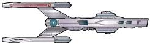

Flotta Stellare - Classe Constellation |
|  |
| USS Constellation NCC-1974 Seconda nave che porta questo nome. | The Battle | Il numero di registro della nave è un 47. |
| USS Gettysburg NCC-3890 Ultima nave comandata da Mark Jameson prima di essere promosso Ammiraglio. | Too Short A Season | Gettysburg è una località della Pennsylvania dove nel 1863 i Nordisti sconfissero i Confederati del Generale Lee. |
| USS Hathaway NCC-2593 Costruita nel cantiere navale Copernicus e varata nel 2285, è stata posta in disarmo prima del 2365, quando è rientrata temporaneamente in servizio al comando di William Riker per una simulazione di battaglia. | Peak Performance | Anne Hathaway era la moglie di William Shakespeare. Il ponte della Hathaway è un adattamento del ponte di battaglia dell'Enterprise 1701-D e gli schermi dei computer hanno una grafica sullo stile dell'Enterprise-A. Il modellino della Hathaway è quello della Stargazer, costruito per The Battle, a cui sono state apportate alcune modifiche. |
| USS Stargazer NCC-2893 Comandata da Jean-Luc Picard tra il 2333 e il 2355, ritrovata dopo il suo abbandono. | The Battle | Stargazer è un termine scherzoso per indicare un astronomo e
significa anche «sognatore», «persona che vive tra le nuvole». La targa commemorativa riporta il motto «To bring light into the darkness». |
| USS Victory NCC-9754 Comandata dal Capitano Zimbata, precedente assegnamento di Geordi La Forge. | Elementary, Dear Data, Identity Crisis | Per il modellino della Victory è stato riutilizzato quello della
Stargazer realizzato per
The Battle. La Victory era una nave da guerra britannica. |